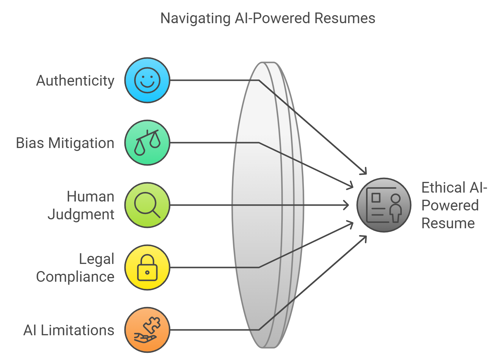

VI. Ethical Considerations and Limitations: Navigating the Moral Matrix of AI-Powered Resumes
In this chapter, we take a practical approach to applying AI techniques in real-world resume scenarios. Learn how to use AI tools effectively to enhance your resume's impact, boost your chances of getting noticed by recruiters, and land the job of your dreams.

A. Maintaining Authenticity While Using AI Tools: How to Stay True in a World of Artificial Assistance
1. The Ethics of AI-Enhanced Self-Presentation: Walking the Tightrope
The Ethical Dilemma: Kant vs. The Job Market
Imagine Immanuel Kant and a career coach walk into a bar. Kant says, "Always tell the truth!" The career coach replies, "But make it sound good!" How do we balance these perspectives in the age of AI?
- The Kantian Approach: Be honest, even if it means not getting the job.
- The Utilitarian Approach: Optimize for success, because getting the job will lead to the greater good.
- The AI-Age Solution: Use AI to present your true self in the best possible light, without crossing into fiction.
Your Ethical AI Toolkit:
- The Truth Detector: For every AI suggestion, ask yourself, "Can I back this up in an interview without sweating nor hesitation?"
- The Embellishment Boundary: Use AI to enhance expression, not to invent qualifications. You're writing a resume, not the next sci-fi bestseller.
- The Reality Check: Implement a personal "truth check" for every AI-modified statement. If your mom would raise an eyebrow, it's probably gone too far.
STEM-Specific Scenario: An AI tool suggests claiming expertise in Python based on your experience with Java. Ethical move? Mention your Java expertise and your ability to quickly learn new languages. Unethical move? Listing Python projects you've never actually coded. Remember, in tech, being caught in a lie is worse than admitting you need to learn something new.
2. Preserving Personal Voice and Unique Contributions: How to Avoid Sounding Like a Robot-Written Resume
The Challenge: In a world where AI can make everyone sound like a TED talk speaker, how do you ensure your unique brilliance shines through?
Strategies for Maintaining Your Unique STEM Flavor:
- The 70-30 Rule: Use AI for 70% of the structure and optimization, but write 30% of key accomplishments in your own words. Let your inner nerd flag fly!
- The Quirk Quotient: Incorporate unique projects or methodologies that showcase your individual approach. Did you debug a system while upside down? That's worth mentioning!
- The Balanced Equation: Mix standardized industry terms (for ATS) with personal phrasing. It's like coding - use the standard libraries, but add your own functions too.
STEM-Specific Application: For a machine learning project, use the term "neural networks" to appease the ATS gods, but describe your unique approach to model architecture in your own words. "Implemented a neural network that learned to recognize cat memes faster than I can scroll through Reddit" is both ATS-friendly and uniquely you.
B. Addressing Potential Biases in AI-Assisted Resume Writing: Debugging the System
1. Recognizing and Mitigating AI Biases: Because Even Robots Have Bad Days
The AI Bias Bestiary:
- Historical Bias: When AI learns from past hiring data and perpetuates old biases. It's like using internet explorer to browse modern websites.
- Representation Bias: When certain groups are underrepresented in training data. It's the "tech bro" effect in digital form.
- Measurement Bias: When the data collection itself is flawed. It's like trying to measure your height with a broken yardstick.
Your Anti-Bias Toolkit:
- The Multi-Tool Approach: Use multiple AI tools to cross-reference suggestions. It never hurts getting a second, third, and fourth opinion.
- The Critical Eye: Evaluate AI recommendations as if they came from that one uncle at Thanksgiving dinner.
- The Diversity Check: Supplement AI tools with human review, particularly from diverse perspectives.
STEM-Specific Consideration: Be aware that AI trained on historical STEM hiring data might perpetuate gender or ethnic biases. Actively work to counteract these by emphasizing your unique qualifications and experiences. If you're a woman in tech, don't let AI underplay your coding skills. If you're from an underrepresented group in STEM, make sure your innovations get the spotlight they deserve.
2. Ethical Use of Competitor Insights: Inspiration, Not Imitation
The Ethical Dilemma: Using AI-generated insights about successful resumes in your field without turning into a copy-paste bandit.
The Ethical Insight Incorporation Process:
- Trend Spotting: Use insights to understand general trends in successful resumes. It's like studying fashion trends without stealing someone's entire outfit.
- Personal Adaptation: Apply these trends to better showcase your own genuine experiences. Think of it as remixing a song, not pirating it.
- Uniqueness Preservation: Avoid directly copying unique phrases or project descriptions. Your resume should be as original as your GitHub repos.
STEM-Specific Example: If AI analysis shows successful data science resumes emphasize A/B testing experience, ethically highlight your own A/B testing projects. Don't have any? Time to start an A/B test on your coffee brewing method and spin it into a data project!
C. Balancing AI Suggestions with Human Judgment: When to Trust Your Gut Over the Machine
1. The Importance of Domain Expertise in Resume Tailoring: Because Sometimes You Know Better Than the Bot
The Human-AI Collaboration Framework:
- AI as Idea Generator: Use AI as a brainstorming buddy for initial suggestions and data-driven insights.
- Human as Domain Expert: Apply your specialized knowledge to validate and refine AI recommendations. You're the fact-checker of your own life story.
- Judgment as the Final Filter: Make decisions based on your understanding of the specific role and industry. You're the director of your career movie; AI is just the special effects team.
STEM-Specific Application: For a specialized field like quantum computing, use AI for general resume optimization, but rely on your expertise to accurately represent complex technical concepts. AI might suggest "Worked on quantum stuff," but you know it should be "Implemented error correction algorithms for superconducting qubits."
2. Navigating Conflicting AI Recommendations: When the Robots Disagree
Your AI Conflict Resolution Toolkit:
- The Relevance Test: Assess each AI tool's relevance to your specific STEM field. A general resume AI might not understand the nuances of bioinformatics.
- The Freshness Check: Consider the recency of the AI tool's training data. You don't want resume advice that's as outdated as VCRs.
- The Reality Weigh-In: Balance AI suggestions against your industry experience and job requirements. Sometimes, human intuition trumps artificial intelligence.
- The Peer Review: When in doubt, consult with mentors or colleagues.
STEM-Specific Scenario: One AI tool suggests emphasizing soft skills, while another pushes for technical abilities. Use your understanding of the role (e.g., research-focused vs. client-facing) to strike the right balance. For a research position, your ability to explain complex algorithms might be more relevant than your stellar coffee-making skills (unless you've automated the office coffee machine, in which case, mention both!).
D. Legal and Privacy Considerations: Keeping Your Digital Footprint Clean and Legal
1. Data Protection and Privacy in AI-Assisted Resume Creation: Don't Let Your Resume Become a Data Breach Waiting to Happen
Your Privacy Protection Playbook:
- The Fine Print Detective: Thoroughly review the privacy policies of AI tools before use. Yes, actually read them, don't just click "I agree"!
- The Minimal Data Diet: Feed AI tools a low-calorie data diet. They don't need to know your childhood pet's name.
- The Digital Janitor: Regularly delete your data from AI tools after use, if possible.
- The Anonymity Cloak: Consider using anonymized versions of your resume when utilizing AI tools. Be the Batman of job applicants!
STEM-Specific Consideration: Be particularly cautious with proprietary information about research or projects, especially in fields with intellectual property concerns. Your groundbreaking algorithm for optimizing pizza delivery routes might be your ticket to a job, but it could also be your ticket to a lawsuit if it's actually your company's secret sauce.
2. Compliance with Employment Laws and Regulations: Keeping Your AI-Enhanced Resume on the Right Side of the Law
Your Legal Compliance Checklist:
- The Law Buff: Research relevant employment laws in your jurisdiction.
- The Truth Teller: Ensure all information in your AI-enhanced resume is verifiable. If you can't back it up, back it off.
- The Transparency Advocate: Be prepared to explain how you used AI tools in your resume creation process, like showing your work in a math problem.
- The Bias Buster: Avoid using AI to infer or include protected characteristics (e.g., age, race, gender). Your resume should focus on your skills, not your demographics.
STEM-Specific Example: In highly regulated industries like healthcare technology or financial technology, ensure that AI suggestions don't lead you to claim certifications or clearances you don't possess. Saying you're HIPAA compliant when you're not is a one-way ticket to Trouble Town, population: you.
E. Limitations of Current AI Technology in Resume Tailoring: When AI Isn't As Smart As It Thinks It Is
1. Understanding the Boundaries of AI Capabilities: The "Almost Human, But Not Quite" Syndrome
Current AI Limitations:
- The Context Conundrum: AI lacks true understanding of career contexts and nuances. No one wants a tourist guide who's never actually visited the country.
- The Plausible Fiction Generator: AI can generate content that sounds good but might be inaccurate, like a very convincing bullshitter at a tech conference.
- The Complexity Confounder: AI struggles to capture the full complexity of STEM roles and projects. Quantum physics is difficult to explain using only emojis.
Your AI Limitation Workaround Toolkit:
- The Human Override: Use AI as a supplementary tool, not a replacement for your own judgment. You're the captain, AI is just the ship's computer.
- The Fact-Check Frenzy: Be prepared to extensively edit and verify AI-generated content. Trust, but verify... and then verify again.
- The Niche Knowledge Ninja: Recognize that AI may not fully grasp the significance of niche or cutting-edge work in STEM fields. Sometimes, you need to educate the educator.
STEM-Specific Consideration: For emerging fields or highly specialized roles, AI tools may not have sufficient training data. If you're working on developing quantum-resistant cryptography algorithms, don't expect AI to fully grasp the nuances of your work. In these cases, your expertise isn't just valuable - it's essential. You might need to "dumb it down" for the AI before you can smart it up for the humans.
2. The Evolving Nature of AI and Its Implications: Keeping Up with the AI Joneses
The Challenge: Staying current in a field that moves faster than a caffeinated cheetah.
Your AI Evolution Survival Guide:
- The Eternal Student: Regularly update your knowledge about the latest AI tools and their capabilities. Pretend you're back in school, but the subject is "The Future" and there's a pop quiz every day.
- The Community Connector: Participate in professional forums or communities discussing AI in career development.
- The Flexible Futurist: Be prepared to adapt your resume tailoring strategies as AI technology evolves. Today's best practice might be tomorrow's landline.
STEM-Specific Application: As a professional in a technical field, leverage your analytical skills to critically evaluate new AI tools and their potential impact on resume creation and job application processes. You're not just a user of AI - you're potentially its creator or evaluator. Stay curious about developments in natural language processing or machine learning that could revolutionize how resumes are written or read. Who knows, you might even spot a gap in the market for a new AI tool and turn your job search into a startup opportunity!
Conclusion: Ethical AI Use in Resume Tailoring - Becoming the Tony Stark of Job Applications
Congratulations! You've successfully navigated the moral maze of AI-assisted resume creation. You're now equipped to use AI tools with the wisdom of Yoda, the innovation of Tony Stark, and the ethical compass of Captain America (but with a more up-to-date understanding of the modern world).
Remember, as STEM professionals, we're not just users of this technology - we're its shepherds. We have the power to shape how AI is used in career advancement, setting the standard for ethical practices that could influence industries far beyond our own.
"With great AI power comes great responsibility. Use it to showcase your true self, not to create a sci-fi version of your professional life." - Uncle Ben (whom you unfortunately did not see at Thanksgiving)
As you venture forth into the job market, armed with your AI-enhanced (but authentically you) resume, keep these key points in mind:
- Authenticity is your superpower. Use AI to polish your professional image, not to create a hologram.
- Be the designer of your own destiny. AI is your tool, not your ghostwriter.
- Stay curious and critical. The AI landscape is constantly evolving - keep learning!
- Ethics isn't just a chapter in a textbook - it's your personal brand in the AI age.
- Your unique experiences and perspective are what truly make you stand out. AI can help you articulate your awesomeness, but it can't create it.
Now go forth and conquer the job market, you brilliant, ethical, AI-savvy STEM superheroes! May your inboxes be filled with interview requests, your calendars bursting with exciting opportunities, and your careers soaring higher than a SpaceX rocket (but with fewer explosions on the launchpad).
Remember, in the ever-evolving world of tech and AI, you're not just looking for a job - you're embarking on the next exciting chapter of your professional adventure. And with your newfound AI wisdom and ethical grounding, you're ready to write that chapter in a way that's true to yourself and impressive to others.
So power up your AI tools, activate your ethical force fields, and show the world what happens when human brilliance meets artificial intelligence - all while staying true to your authentic, amazing self. The future of ethical AI use in professional development starts with you. No pressure, but the fate of the AI-human job market alliance rests in your hands. You've got this!

Key Takeaways: Real-Life AI Resume Techniques
- Use AI tools to tailor your resume for specific job descriptions, ensuring relevance and precision in your skill set.
- Implement AI-assisted keyword optimization to enhance your resume's visibility in ATS systems.
- Regularly update and refine your resume based on feedback from AI analysis tools and job market trends.
Take the Next Step with AI-Assisted Resume Tailoring
Ready to implement these techniques? Start by applying AI-powered tools like Jobscan and ResumWorthy to analyze your current resume. Use the insights from this chapter to refine your resume and ensure it’s optimized for your target job. Visit our website for additional resources and AI-based services to help you succeed.